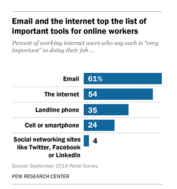
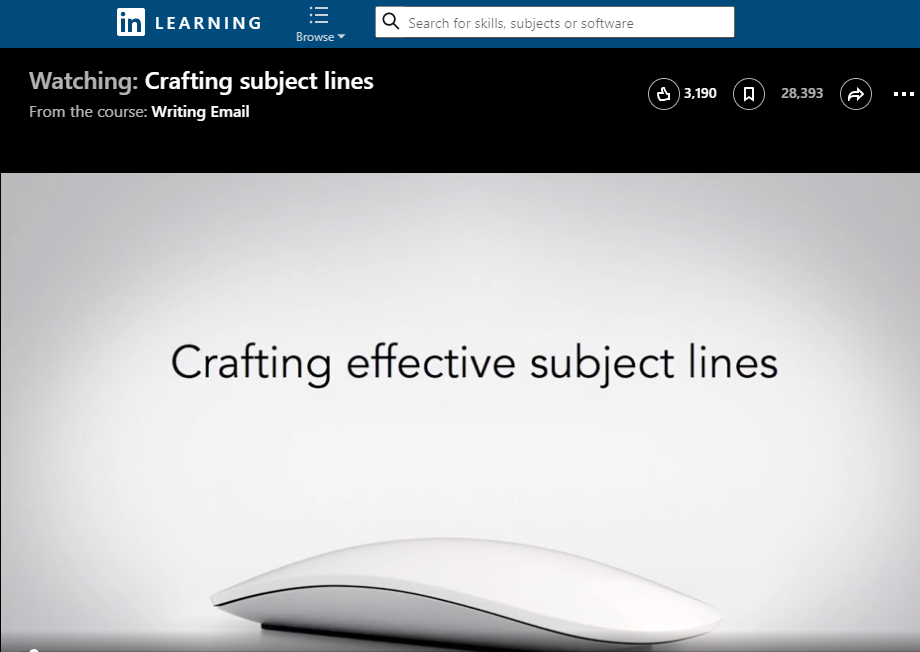

Email is critical to the work of over half of the workers surveyed by the Pew Research Center on Technology’s Impact on Workers. The bar graph on the right shows that 61% of workers said that email was “very important” to their work.
Why is this fact important for technical writing? The better you are at writing emails, the better you are likely to do in the workplace. As more businesses and organizations skip paper-based communication and turn to email, you will find that you spend a great deal of time reading, writing, and responding to email messages in the workplace.
With email such an important part of the work that people do, it’s crucial to learn the strategies that ensure your messages get read and accomplish their goals.
If you want your memo or email message to be read, you need a strong subject line for the text you’re writing. Readers expect a subject line to give them a short description of the contents in a way that piques their interest in the topic. When a subject line doesn’t, it’s possible that you won’t people won’t read any further. They’ll just skip on to something that is interesting.
Apply These Strategies to Your Project
- Watch the LinkedIn Learning video Crafting Subject Lines (3m 41s), which discusses email subject lines. The same ideas apply to memo subject lines. The video is free with your VT login. Follow these instructions to login.

- Work through the following checklist to make sure your subject line is effective:
- Be sure you have a subject line in the first place. Messages without a subject grab no one’s attention.
- Think about your audience and purpose. Your subject should summarize the key point of your purpose in a way that readers will understand.
- Keep it short, since only the first few words are going to show up in the receiver’s inbox. Keep it to 50 characters or less.
- Put the most important words at the beginning. If your subject line does get cut off, you want to be sure the words that matter are visible. Additionally, people skimming down their inboxes look at the beginning of the subject, not the ends.
- Be specific. “Upcoming Trip” leaves the reader wondering whose trip and to where. “Your Upcoming Trip to NYC” is much clearer.
- Avoid all caps. Nobody likes all caps.
- Use emoji sparingly. If you aren’t sure that your recipient will know what the emoji means, don’t use it.
- Make the subject unique. If that subject could be added to nearly anyone’s message, try again. For instance, “A Question for You” could go on any email that asks the recipient a question. “Question About New Invoice System” tells the recipient exactly what to expect in the message.
- Think of your subject line like a headline for a news story. Make it click-worthy (but avoid misleading subjects that seem more like clickbait).
- Use title case, capitalizing every important word. Never use all lower-case, since it looks unpolished and less professional.